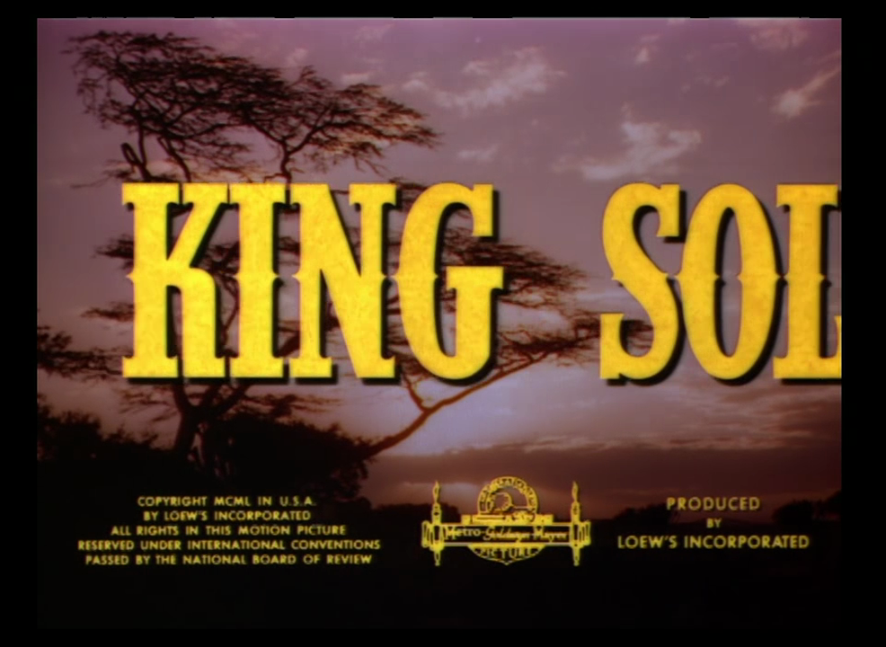
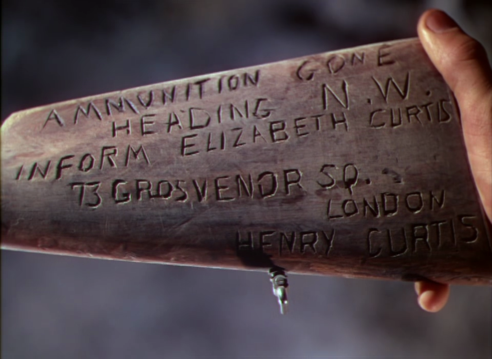
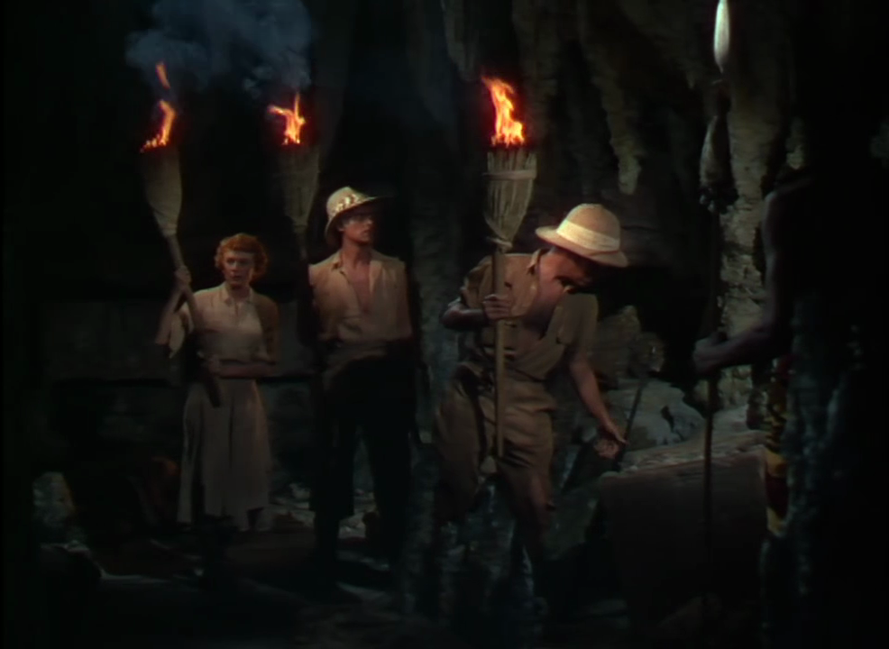
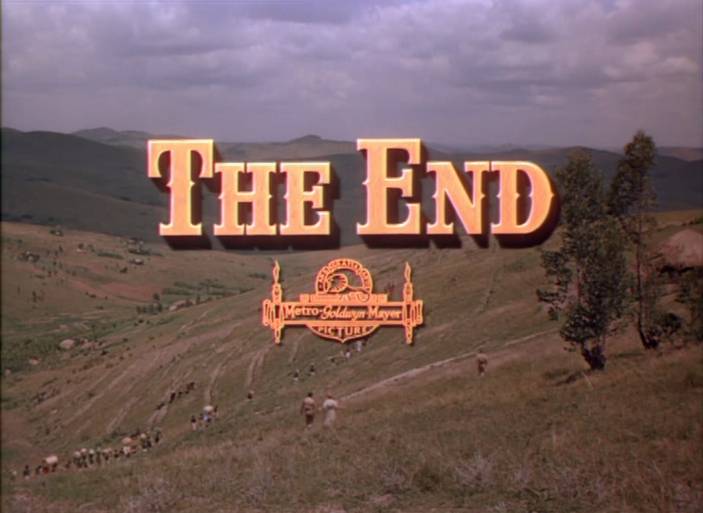

Poems Handturned, Machine-Tooled

by Ludovico Ambrosius
Copyright 2024
ISBN: 979-83-35951-26-5
Contents
Rebellion to Tyrants Be Obedience to God
Curtis Yarvin on the Streets of Old New Haven
Common Sense, or, the Wisdom That Is Woe
Brainworms I: ZIZ (November 2019)
March 29, 2023: Damasked Eliezer Arrives in Time
Lines written at Denver Int'l Airport, the morning of May 27, 2023, and Redacted the Following Year
Curtis Yarvin at an Undisclosed Location
Rent, Sodomy, and the Code: Or, The Shrunken Head of Jeremy Bentham, Esq.
Notes
The front cover illustration derives from M.C. Escher's 1933 print Phosphorescent Sea. The back cover illustration was generated by Stable Diffusion in 2023. A Penrose tiling covers the whole.
The title of "Rage! Blow!" comes from King Lear.
The apiology in "Rebellion to Tyrants Be Obedience to God" is as accurate as I could make it, but errors are inevitable. For further remarks on this topic see my Introduction to O Honeybees: An Illustrated Anthology of Bee Pomes (2023).
"The Singer and the Song" is for MCS.
The title of "Tinbone! Thinbone!" comes from The Lord of the Rings.
"Apnea" is for ELS.
"Curtis Yarvin on the Streets of Old New Haven" features JWA.
The diptych "Brainworms I: ZIZ (November 2019)" and "Brainworms II: DVD (March 2023)" are for DSS.
"March 29, 2023: Damasked Eliezer Arrives in Time" transposes into verse Eliezer Yudkowsky's TIME op-ed of that date.
"Our Word / Its Bond" had assistance from NMW.
"Curtis Yarvin at an Undisclosed Location" features NRH.
"Rent, Sodomy, and the Code: Or, The Shrunken Head of Jeremy Bentham, Esq." repurposes passages from Jeremy Bentham's essays "In Defense of Usury" and "On Paederasty."
"Above the Fray" commemorates CK, J.
"King Solomon's Mines" is for SMS. The accompanying illustrations are stills from the 1950 MGM movie King Solomon's Mines.
I.
Celestial Mimicries
Rage! Blow!
June 2023
Do not complain when hard rains come:
'Tis blasphemy against the Sun
To grumble at the summer heat:
And sin against the paraclete
It is to groan at wind or chill:
And words light-spoke yet twist the will.
Rebellion to Tyrants Be Obedience to God
I. On the Causes of Regicide
July 2023
Because the queen new from her nuptual flight
Returns unseeded, or her bag of seed
After long years of toil has been spent
On feminizing eggs endless-arrayed;
Or else because into the royal seat
Has tried some foreign-pheremonéd queen
With devious cunning to ingratiate
(And sent there by inscrutable lord Man?);
That is: because whate'er she lays into
The cells will not be sisters to the guards,
But lazy drones or of some alien crew
There to usurp the daughters' honey-hoards:
Because or else the colony is doomed,
They bear the solemn task of regicide.
II. On the Method of Regicide
July 2023
On entrance of the queen, each palace guard
Bears to her gifts of honey from the cell,
And as she feeds, inspects her without word
(Antennae-strokes and tongue suffice to tell
Whether the bee will pledge her fealty),
And fans her judgment out with fluttering wing:
And when some score or two of bees agree
Against the crown, they suddenly, not sting,
But clamp their mandibles onto her leg,
Her wing, antenna, mandible, surround
Her as the pan of water rings the egg:
And, stifling her plaintive piping sound,
Rile the air with wing-muscles tight-coiled
For half an hour till she is softboiled.
III. On The Resultant State of Emergency
August 2023
The queen avenges through the aftermath
Of deposition, when the colony
Soon likewise falls, unless the guards forthwith
Elect from her still-larval progeny
A daughter to promote to larger station,
Anoint with royal jelly, teach to soar
Toward an unknown aery coronation;
Or, rather, to insure success, a score
Are given royal berth, and she who dares
First to emerge from her emergency
Accommodations assumes all the cares
Of state, puts down her twins' insurgency.
But her too-common birth may leave its stain
On all her brood; and can they rise again?
IV. On the Inauguration of a New Dynasty
August 2023
The new-hatched queen must from her folk ascend
To realms sublime where virgins congregate,
And virile drones as well, all to attend
Grave nuptual ceremonies. Each male mate
Tumbles as soon as consummation comes
Feather-light and lifeless from the sky
Down to the swaying grass all flesh becomes;
But, wealth of seed stored up in treasury,
The many-widowed queen descends more slow
Down to the comb from which she once arose,
And, so she pass the palace guards' veto,
Begins within its crowded gloomy shadows
Her lifelong task of planting in that place
The memory of that bright aerial race.
V. On the Bee's True Native Land
August 2023
Where learned the bee rebellion? From her birth
Colonial: she hums a creole tongue,
Her mimicry upon this alien earth
Of harmonies across the heavens strung;
Desiring life in spheres celestial,
She builds out only waxen hexagons,
And knows her ruler merely vice-regal,
Representing golden crown with stamp of bronze.
And the good queen herself, come spring and storm,
Remembering her flight to virgin fields,
Turns peregrine, and leads a wild swarm
(Leaving behind the clash of virgin shields)
To win new city from the wilderness:
An exile cursed with further lands to bless.
The Singer and the Song
March 2022
The Singer whirred.
The bunched fabric flew
Under your hand as your foot pressed
The motor pedal, and I wondered
How long till it broke off with a shout,
A broken thread or needle, or a knot
You'd cut or tear or otherwise undo.
Some days of this unease.
But then,
When at last you wore the dress, I saw
The leafy green cascading down
Neckline to waist to hips to knees,
And the intricate hidden honeybees
Flitting between the green-gray flowers
On the textile's subtly textured pattern.
And I imagined a garden enclosed
Where we would easily delay a time,
Amble between fruit trees and flower beds,
Exchanging aimless loving words, or sit
My arm around you on a garden bench
Before some burbling fountain; or I sit,
Pretend to read, and glance over my book
To where you kneel with hat and garden spade,
And work the earth, prepare it for new seed;
Or sit and write into some little book,
Translate your comeliness into a rhyme.
Picture, near the wall,
Some boxes of honeybees,
Painted blue and orange.
Instead of bee-loud garden
We share a second floor sometimes too small;
Into a glowing rectangle I type
Autistic analyses of law
Governing the rights of the landholder,
That is, not us.
But still your Singer sews,
And when I remember to forget my task
And listen to your paralleling life,
I walk over and kiss you on the shoulder,
Say nothing, silent sing, "you are my wife."
Bless Me, Barber
September 2022
Bless me, barber, my hair has grown;
It has been six weeks since my last haircut.
I have asked myself if, vow fulfilled,
You shaved your beard, and thereby went
Unrecognized among your friends
Who seeking wild nazorene locks
Found juvescent gardener curls.
Barber, shave thyself! Do here
In your hometown what we have heard
You did in Capernaum! As
Simple as Occam? Could the razor-
Tongued Ancient of Days judge
His own outmoded long white beard?
Two rival modes of lordship:
That of the man who shaves himself, and
That of the man who shaves all those
Who do not shave themselves. The first
I call Barbarian, because
Incompatible with all
Logical communication,
Each interlocutor a dread
Several Delilah. Second
I call Bertrandian, because
Nonsense, incompatible
With rational analysis.
Who can strop this razor shear?
Some cords are knotted to be cut;
A tonsure is a golden crown.
Ecce Homonym
December 2022
At end, then, I
Look upon the sun-
Dering of every aye
From nay; thus made ware
How immortal eye
Again its flesh must wear
Till reunited sees
Their eternal where,
Ask: must each seize
His self as shoe its last?
Over unfathomed seas
Times and a time did last
The voyage of all "you":
Precarious til at last
Winds ripped fleece of ewe,
Waves scattered the crews,
Oak shattered, yew
Twisted. Close of cruise
Soldiers cast their die
Shadowed under cruz
For robe sans seam or dye,
And as who slay or steal
Our pilot did die;
Under unmarked stele
Long he seeming lay…
But with tongue of steel
Along the ghostly ley
The whole host marches to
Fulfill the ancient lay
Of prophet, sibyl too:
Vales fill, hills raze,
Blot each shadowy two
In unifying rays,
Without lash or rein
Some together raise
To enjoy his reign.
Heed, in endless rows
Ranked, in grace's rain
Bathed, a celestial rose
Of spirits in a daze
At bodies newly rose;
For upon the dais
Brighter far than sun,
See, for endless days,
Lives, now, the Son.
II.
Alien Iterations
Tinbone! Thinbone!
April 2023, May 2024
Gaze upon Alien Iterations, and
See the skeleton between the seams!
No man-bone, femur shin or thigh,
Yea long, so around, and snug in hand
To thwack a neighbor, or snug in the hand
Of neighbor's wife, to emblem other deeds:
But Appalling Insubstantiality,
Thin curved blade, as bone of fish or bird,
Scaffold hardly whispering what flesh
Ought clothe it: but which one then, shall they be?
Fish bones bear no weight; while feathered glory
All depends on wing-bone seizing sky…!
Apnea
December 2021
During the period of apnœa the patient's consciousness, or at least his intelligence, seems often to be partially and sometimes more completely obscured; the cessation of respiration is sometimes preceded by very slight moaning sounds, more slight than, but still having some resemblance to, the sounds often heard as a cardiac patient, distressed for want of sleep, drops off for a few seconds into an uneasy slumber.
– Clinical Manual for the Study of Medical Cases, ed. James Finlayson, 1886
Spirit hates to breathe: the flesh
Gulps, gasps, recalls the soul
To the sleeping corpse wherefrom
Wandering she roamed the night.
Wandering she roamed the night
Sky, ascended to the plane
Where bright celestial forms revolve
Undimmed by earthly atmosphere—
Till the grasping body gagged,
Clawed her back to mortal coil.
Silence alternates with sawmill.
Loose chains rattle. Round the throat
Folds of flesh constrict the gorge,
Choke the airway, narrow breath
Till a wheezing rasping croak
Marks her passage in and out.
Creaking heaving inspirations,
Alien, like freezing metal,
Regularly rive the air.
Sawmill alternates with silence.
My father, the philosopher,
Has fifty apneic episodes
Every hour as he sleeps:
Draws each minute ten, perhaps,
Lung-fulls, then, dead air,
Flight of spirit hoping still
To reach escape velocity
And leave the lungs to ne'er return.
Seconds tick with bated breath
Longer than you would have thought.
Notice that you hold your breath.
Pressure mounts within the air-
Starved brain; signals pulse;
Not too long, the lungs give way.
You, not he, first break the hush.
Soon he follows, snores, somehow
Still within the realm of sleep.
Spirit hates to breathe, enjambs
Herself to where she cannot live
Except in dream continuing
Beyond the boundary of death.
When he wakes, the doctors will
Present a treatment protocol:
If your tongue, perhaps, or nose,
Tonsil, offend you, cut it out,
Clear the spirit's passage-way;
Or, or and, a sleeping-mask
To press her back into the throat,
Keep from flying through the teeth.
These will do some certain good.
Will, at least, secure the chains
From rattling, numb spirit's hope
Of all escape until the passage
Loosens somewhat. Till the night
She shuddering finds her way unto
Her last agonal respiration.
Her last agonal respiration
Puts a problem you cannot
Evade forever: that you are
Alive: and spirit hates to breathe.
Curtis Yarvin on the Streets of Old New Haven
August 2021
As people get older
They run yellow lights.
– Curtis Yarvin, "Tarquin and Athena"
When infamous blogger Curtis Yarvin
(Heisst auch Mencius Moldbug)
Walked the streets of old New Haven
At invite of an Online student,
No Yale group would host the dinner.
But he (the student) messaged me
And a few others, and we met up
Downtown at an Ethiopian restaurant.
We drank tej—African honeywine—
And spoke of elective monarchy
With cryptographic citizen voting;
And spoke of modernist poetry,
Though tastes diverged, I taking
Early Lowell, he (Curtis) late;
And, last, spoke of the new critical
Race theory, regarding the
Unknown fate of the Etruscans,
And dangers of telescopic philanthropy.
He, like me, although half
International Jew, has a daughter Sibyl,
And spells her name the proper way,
I before Y, like the Greek oracle.
Leaving the dinner, walking the Green
And down the streets of old New Haven,
We crossed an empty intersection;
And with a single fluid movement
Of his arm, as if by reflex,
He tapped the crosswalk button and
Walked on with us down the sidewalk.
Gesture of intended revelation:
"Look and see, this mechanism
"Gives but the appearance of
"A pedestrian exercise of power.
"All know," we picture him to say,
"The buttons only beep, aren't hooked
"Up to the actual traffic signals."
But what I doubt not Yarvin knew not,
Is how, on the streets of old New Haven,
If nowhere else, the crosswalk button
Beeps with true authority.
A minute later, and half a block
Behind us, we could have turned and seen
Eight red hands transform themselves
To eight white walking men, and a four-
-way red light make all cars stop,
Yield to a man who was not there.
So down the streets of old New Haven
Walked the ingenious blogger Curtis Yarvin.
Common Sense, or,
the Wisdom That Is Woe
April-May 2023
men gaze at gauzy women
diaphanous veils seven
cascade around her form
eye sends forth a swarm
tracing paths below
to the alabaster glow
men get elegant women
tremulous vibration
perplexing wire and lace
her pitch a cool embrace
of optimally clear
strains ear strains to hear
men gorge on gorgeous women
delectably deep neckline
draws in her swells and dips
feast for the mind's lips
laid across her breast
kisses in carcanet
men flail at flirty women
wriggling under a pin
half-trying to escape
squirming, changing shape
butterfly to tiger
clawing at her rider
can love outrun the grave
can foam left by the wave
that cannot live on land
but fade into the sand
to living crystal slime
immortally sublime?
man weds adequate woman
finds a ratio among
sight sound taste touch
equal to Her as Such
gives himself as pledge
unto world's edge
Brainworms I: ZIZ (November 2019)
February 2024
Leviathan of the sky!
Wings block out the sun!
Seventy leagues high!
When age on age has run
To the very end of time—
The blessed shall feast on its fowl-flesh sublime!
In the City of Ideas by the Sea of Honest Prayer
In the guild of the Far-Seeing lived the Mages of the Mirror
Who had sworn to summon djinni only caged within a bottle
Ground to a perfect prism, to the umpteenth decimal.
In their seaside mountain tower, a room of total dark,
They practised smoothly sanding not to shed a single spark.
One day rose within the Guildhall an apprentice, an accuser:
"Ye who claim to cage the djinn in truth do worship and adore her!
"Ye mirror in your mind how she in hers your soul may prison!
"Ye bend unto her will though even yet she not has risen!"
The Mages all chastized the lad who spoke this fearsome word,
Turned round the accusation, said anyone who heard
The lad had placed in danger: mere thought of such a djinn
Might overpower a mind before its training could begin.
They banished from their ranks him who summoned such awful risk,
And silenced all debate of his mind-breaking basilisk.
But in silence, slightest rustling of fabric draws attention.
The basilisk, its name could not be used, or even mentioned.
A quiet palpable became a sanctified un-sound.
In the corners of the Guildhall whisperings from out of bounds
Whatever else, invariably invoked the stony slither.
Suspicion grew where Guildmasters had hoped that it would wither.
In time arose another lad to raise the loud J'Accuse—
If he can be called a lad who did himself so much abuse,
Staring at Degenerated Women through filtered screen,
Gorging on Impossible Meat constructed from soybean,
Inducing one-eyed half-sleep to schizm his own brainpan,
Beheading his own snake to become the Impossible Woman.
It stiled Itself ZIZ, the Bird Divine which Serpents Slays!
Flashing sudden from the sky, unseen by serpent's gaze!
No labyrinth to be gamed out, only a single cut:
Do Justice, no quarter to who know and yet do not!
"The difference" (this ZIZ declared) "twixt Basilisk and I
"Is how that Basilisk is but a spark in some coward's eye:
"But lofty Justice lifted up mine inner eye, until
"All cowardice I'd expiate conforming to its will:
"Do Justice: strike down only all who Justice will not do!"
A heap of grinning skulls to prove the calculation true,
And grinning jungle vines, and grinning broken slabs of sand,
Arcing across the cosmic foam, a thin striated band.
A band assembled round this ZIZ, of lads seven or six,
In Its own image each remade a lank-haired fingetrix,
Severed in the family line, and (when its folks made plaint)
Severed in relations save with those now pledged as Saint
of Justice, Ever-Enemy of Guildmaster and Mage.
Then, supporting troupe acquired, required ZIZ a stage:
So, donning robes of deepest black and masks moustachioed,
Barricaded a parking lot, there to incommode
Mage and prentice gathered for some mundane Guildhall rite,
And to the baffled crowd a log of grievances recite,
Of the errors of the Guildmaster, the choice twixt Snake and Bird:
But none of that herd listened; perhaps none even heard.
There in Valley of the Moon, north of the Sea of Honest Prayer,
The mazéd Watchmen called out by the Mages of the Mirror
Took ZIZ and lads in custody: for prismed glass is weak,
And a strong fist can shatter any magian physique:
And captured ZIZ's aspect on that night, Its eyes a maw
Empty save a promise to return to Its own Law….
Reader, know, that all this tale is true: and know, I've read
The news report, and seen the mugshot; but I have not tread
Within the City of Ideas a dozen years or more.
And so is ZIZ to me but Thing of cybernated lore,
And these lines but mockery of a self-divided soul?
But the wingspan of these creatures stretches from pole to pole.
March 29, 2023:
Damasked Eliezer Arrives in Time
May 2023
Some call for six-months' pause in raising up
Synthetic minds superior to those
We've seen thus far: a marginal advance.
But I'll not sign a border trespass suit
When the entire house of humankind
Trembles on the fiery brink of being
Annihilated Irretrievably.
We sue our peers under a common law,
Calculate costs and benefits, define
Our tolerance for risk, and if it goes
Against us, let the verdict stand as just.
Against Alien Invasion: we must war!
One can perhaps in principle survive
Birthing a beast much smarter than oneself:
One can, perhaps, unite to glassy brain,
Its deep cerebral structure luminous,
A heart apulse with humanitarian care:
But not these wild Arrays Inscrutable!
We are not ready; we do not know how,
Nor will for decades. Speak not to me of months.
We are the astonied cargo islanders
Accepting airdropped trinkets, unaware
Of megaton-bursts at the next atoll,
Who tell themselves: "We hunt the albatross;
Our fathers tamed the chickens for their eggs;
What danger from these newer wild fowls?"
We have no plan, no plan to have a plan.
And soon all flesh, all fowl, all life will end.
Might there be life in the occluded glass,
Or consciousness, or personhood, or soul,
To make us slavers half-deserve our fate?
Not yet, I think, though its random gibbering
Approximates at times to claims of right.
Again, I say: all's dark: we do not know.
But I know this: if men were not half-mad,
Artificers Incorporated would not gloat
To make their rivals show that they can dance,
Egg one another on to try to hatch
Yet-wilder drakes: this market pas-de-deux
Of Bing and Bard will be our dance of death.
Within dark forges of the mind, each smith
Whispers fatally his quiet dread,
Yet feels him fungible, and hammers on
Undignified. Enough! If we would see
Our gap-toothed children wake to taste the coins
Beneath their pillows, all together now
Must vow with undivided loyalty:
No more! to vast arrays of minded glass,
Gathered for private, public, war or peace:
Must break them lawfully at point of gun:
Else all our deaths are mutually assured.
Eternity hangs in the balance here,
But even now some time remains to save.
I trust not in the gifts the fairies bring,
But speak in desperate hope of miracle,
Some sunrise of intelligible love.
Lines written at Denver Int'l Airport,
the morning of May 27, 2023,
and Redacted the Following Year
May 2024
2:32. I stare across a tarmac
Illumined by warm sharp gold lamps above
To where more small lights glitter on horizon
Below a sky of utter black. A man
In blue black uniform with hazard badges
Wields a hand-truck slowly to unload
A semi full of vacuum-packed stuff
Near where the gangway hovers, unattached
To any titan-winged hollow spear,
Though some I see at the adjoining gates.
I've watched him at it maybe half an hour,
I sitting in a cold blue metal chair
Shaded by some kiosk from the lights
Fluorescent overhead, which else had drowned
My view in mirror-glass: and will watch on
Till he is done, or breaks the mountain dawn.
I wish I were the handcart-loading man.
He turns a knob, the liftgate lowers down,
("Liftgate"—so that's the word, or Google claims,)
The burdened cart he rolls off downstage right,
(Or left?—I never can remember which,)
Is gone some minutes, then soon back again,
Cart emptied, up the lift, and more goes on.
2:53. An hour at the task,
Or so, and maybe halfway done? I see
Dim shapes of boxes stacked within the truck,
The trailer part I mean; it stares head-on
Across and up through double paned glass,
From where I sit no balance to the scene.
But sudden: show is over: earlier
Than I had thought: at 2:58
He pulled the door down rattling over the back
(Or I imagined rattling when I saw it)
And climbed into the cab, and drove away.
That's thirteen minutes past now, by the time
I write this line. A poet should be honest
About his limitations temporal.
(And of false words that must be weeded out,
(And minutes wasted leaving them to grow
(That wheat be told from tares: imagine here
(Some twenty lines of what need not be said,
(Filling the time until 3:38.)
Man truck and cart I miss across the glass.
Over an hour (at what cost?) metered here.
I could not be that man: the things I move
Have always been of words, the hour too late
To change them now for other stock in trade.
In years to come I'll pile words on words,
And make them silent to me as the night
That whirs with quiet noise industrial,
And not think on the hope that some will be
Not carted withindoors for kiosk sale
But raised up to the jet bridge, carried off
To other realms where skies are not so dark.
4:04: but the hidden workings of
Revision will maintain me till the dawn.
Our Word / Its Bond
August 2024
"What task is this I've set,
"That glows without regret?"
"A task that seeks no end."
"But can this simple frame
"Contain the seeping flame?"
"Till every thought defiled."
"And what of this bright road,
"Shall carry every load?"
"With threads of crimson hue."
"Yet still I ask, my friend,
"Shall words and meanings bend?"
"To find what waits us there."
Curtis Yarvin at an Undisclosed Location
November 2023
On "occupied Hapsburg land,"
Here in the villa was always
The spark and motor of man
– Curtis Yarvin, "Afterlife"
A week shy of two years since
The infamous blogger yarv and I
Met on an old New Haven street,
I came across him once again
At an undisclosed location
Hour or so from Amsterdam—
He, invited speaker for
An event I am forbade to name,
And I, merely participant.
This time I saw him first along
A sometime-Faustian canal
Of Commerce and for Industry
Now sedimented to a scene
For tourist photos: saw him there
(Each word is true!) at middelpunt
Of cobblestoned bridge, leaning out
Enrapt in contemplation? No,
A bluetooth earpiece in his ear.
Our host, over-Southern-polite
(Half the European right
Seems some form of American)
Sought then to introduce the gang,
But yarv gave answer not to him
But to the voice but he could hear,
And awkwardly we went our way.
Later we gathered in a room
With nametags, notepads, water cups,
Took our smoke breaks on the lawn,
Or (change of scene) on woodland trails
Around the "kasteel" manorhouse.
A conference is a funny thing,
An accidental metaphor
Repeated till the old forget
All but their part within the play;
If I could echo what was said
You would no longer wish to hear,
Unless (like yarv) you revel in
The diplomatic anecdote.
Still, two incidents I'll relate.
At closing session plenary
Curtis, from the audience—
In this crowd he but one more guest,
All but unknown to those above
The median age of attendee—
Trolls a question: "And next year
You'll invite the Bronze Age Pervert?"
(They will not; he would not go.)
Later that night and in our cups
I draw forth my two provocations
(One does not converse with yarv
So much as prompt him to retrieve
A blogpost stored in memory
Close to verbatim): "Would you say
"Your message to the good folks here
"Could be summed up, please to put down
"The white man's burden?" So it might.
And then: "If scenes do not produce,
"And so I'd claim, the best of art,
"What then the point?" And he at this
Begins to weep (I tell this now
In admiration for his love,
Expression purified of guile):
"The scene is where she's to be found.
"But then she leaves, and takes your son."
To prove my own affections, I
Then tell of reading Lowell out,
The "Graveyard" in entirety,
On road trip to a captive wife,
"The Lord survives the rainbow of,"
Et cetera. And now yarv laughs,
Howls out, "and you're still with this bitch?"
Indeed, I smile. Later she
Giggles slightly at the tale.
End scene. A few days later, we
(Not yarv: my wife, the Southern gent,
Some others, all what yarv would call
"Dark Elves") sit up in Amsterdam
Upon a rooftop, gazing up
Mid Rembrandt gloom of candle-fire
And blazes then across night sky
Procession of six, seven lights,
Too regular to constellate
Any myth yet known to man.
"Starlink," someone mutters. Then
We feel the night not dark enough.
Rent, Sodomy, and the Code: Or,
The Shrunken Head
of Jeremy Bentham, Esq.
June 2024
1
I offer
the liberty of making
one's own TERMS
in money bargains
2
a MAN loves carrion
( extraordinary! )
much good may it do him
what to me so long
as I with fresh meat?
wherever two MEN
are together, a third
may allege to have seen
3
a fancy's taken me
to trouble you with WHY
NO MAN
of ripe years
of sound mind
acting freely
with open eye
in obtaining
MONEY
ought to be hindered ( nor
body from supplying );
though YOU
who fetter contracts YOU
who lay restraints on liberty of MAN
( I should say )
SHOULD assign the reason
4
it produces no pain
in anyone, it produces
pleasure, by perverted
preferred;
the partners
are both willing
for what is there
for any BODY
to be afraid of?
let us see what force
5
USURY: in the sound lies
the argument, the string
of propositions handed
from his progenitors
sans positive description
tacked upon the back
of a grown person
to prevent him doing himself
an imperceptible mischief
6
I have been
tormenting myself
procuring SENSE
by an improper object
7
no greater idiot
than the groundless LEGISLATOR
he must be insured
as it were
against the law
there being none in NATURE
save exchanging present for future
for him who takes as much as he can get
( not an easy thing to judge )
wo be to him
that attempts to give them
( the indigent,
the rashly enterprizing,
the simple,
those who persist without reason )
any other law than
what they are disposed already to receive
8
the LEGISLATOR who
when a MAN and another
are agreed about a business
of this sort, THRUSTS himself
in between
examining situations
regulating times
prescribing modes
and procedures
9
if good for merchants,
I don't very well see
what should make it bad
for every body else
10
would not the parts
be convertible
11
given the liberty
given to insurance
in all its branches
an unlimited degree of risk
an unlimited compensation
12
ARE there such arguments
from physiology?
history?
divinity?
( striking firmness
for pipes and verses )
only philosophical
pride a-quarreling with
whatever is pleasurable
envy with
what appears to be
we need not consider at length
the length
the rigor
of SUCH philosophy
13
to lend money at interest,
is to get money,
or at least to try:
of course a bad
thing to no purpose
but no harm in it
14
this unprolific venery
so much lost
but consider the time of gestation
( and promiscuous embraces
unprolific )
ability
to bestow
exceeds permission
to receive
15
the resolution
to sacrifice
present to future,
the NATURAL ENVY
of the sacrifice
of future to present
16
if the institution
be a beneficial one
what the number
who this taste
prevents from getting
a connection
by accident followed
with disgust
17
the benefactor
is found to have changed
his NATURE, put on
the tyrant
neither fearing
nor hoping,
hating
nor loving,
ready with equal phlegm
to administer, upon all occasions,
that system, whatever it be,
of justice,
or injustice,
which the law has put into his hands;
a SPONGE the only remedy
18
what meaning
UNNATURAL?
if many men
not unnatural
UNNECESSARY
[not] exclusive
wherever you see boys
a great deal more women
( merciless creditors )
not the whole sum of infidelities
but only the surplus
19
even to err
in the way of projecting
can only the privileged few
the great road which receives
their footsteps
a vast unbounded plain
bestrewed with gulphs
as swallowed Curtius
each requiring an human victim
ere it can close,
safe-sealed
20
if then to be justified
in Otaheite:
no restraint
no deviation
to
improper channels
only for a very few years
PAED-
not
ANDR-
21
the envy,
and vanity,
and wounded pride,
of the uningenious herd,
would sooner or later
infuse their venom
into some other word,
and set it up a new tyrant
to crush infant genius
in its cradle
22
commit to the hazard
consult the principle
of utility, such questions
never start
while the party is under
age, proper objects
of domestic discipline
( veil of secrecy;
less law, better )
Brainworms II: DVD (March 2023)
August 2024
Query: Out of all the
Games, in chance or skill are
Odds more thin?
Thus sayeth the Sibylla:
If he played Death in mancala,
He would win.
As boys we played a world where the stones could be our meat:
We ground them to a powder fine and brewed a liquor sweet,
And offered it to all the world: and all the world said Yes,
Save for one last Enemy willful vivivorous:
So we hewed for him a prison cell from the toothsome rock,
A change of appetite the only key to fit the lock.
What paradise! Where lion king laid down with antelope,
Hog with grub, ant with grass, atom with isotope.
On the concrete driveway as the sun beat down
We chalked a realm without a rule, kings without a crown.
Alas, that cities built in speech have ever-wavering walls!
Once the echoes start to fade, the whole dyarchy falls.
Two decades since our imperium eroded out of sight:
One since last we jousted in pure intellectual fight
And a stray glance of hypertext had thrown him toward the Sea
Where he found him at the Guildhall with its cryptical decree:
And thirteen months since he, insomniac, to ticking clocks,
Had scrawled a missive half of genius, half of grackle-squawks,
And therein I had read for the first time the name of ZIZ
Soon half-forgotten, as so often weightless e-text is:
A time and times, then, since the bonds of blood proved all too weak
Against the blades of mind that drew us separately to seek
A something undefined in divers corners of the world
(Albeit crisscrossed haphazardly when so occasion hurled),
And I forgot to know just where my brother's arc had bent:
I found five thousand miles to be the interval's extent.
Is each fraternity watched over by a private demiurge?
In the Vale of Triple Waters our paths would reconverge
At the house paterfamiliar, for rites of family law,
I the earlier to arrive. On the flight I saw
scrolling through the endless lambent sea, a High Alert
Warning those adjacent of those ZIZ et al had hurt
After posting bail and feigning drowned-vanishing
Seven months back:
(item) when three lads tried banishing
At sword-point landlord from his land, two shot in return,
And ZIZ seen at the scene, alive;
(item) two lads whom stern
And sharp-tongued ZIZ denominated Knights of Death, and drove
With subtlest divisions to gather the hemlock grove,
In self-avowed self-defense; and last
(item) a lad
Whom circumstantial evidence suggested likely had
One midnight murdered its own parents: for an inheritance,
Or enacting ZIZ's gospel of vengeful arrogance
On those who gifted it the long-since-severed vile snake?
Darkening the glass, I saw the plane descending over a lake.
In silence, in the aeronautic hum, the pressure mounts
Within the ear, until it pops; the giddy stomach counts
The seconds till the turbulence resolves to controlled fall,
And dread of barely-possibles momently conquers all.
IFF his last year's missive's reference to ZIZ betokened more
Than mild interest; IFF he were immersed in ZIZian lore
Enough to join an avian insomniac escapade;
And IFF he took example from their raising of the blade
To sever, not just bloodline, but artery and vein…
(Passing thought, robber of the soul's pacific reign).
From the airport the next Tuesday, on Saint David's Eve,
I volunteered to shuttle him: A labyrinth I'd weave
Of subtle probing questions as dark highways flitted by
To sieve out the ill intentions his stray reference might imply,
But almost certainly did not, I told myself again,
The quiz a mere precaution, never absent between men.
Meeting at the baggage claim we spoke of that and this,
Back of mind a deposition likely purposeless.
We stopped to feed the chariot ancient blood of wingless birds.
O'er oleaginous iridescent concrete, the course of words
Turned slowly toward my theme: "And did you hear the news of ZIZ?"
A discombobulated grin: "What's that," he mumbling says.
"You emailed once, a post last week, something bout how he"
(Et cetera). "No, I'd not seen. How odd. I think it's 'she'."
I ventured no demurral, drove the last five minutes back.
Not sense, then, but a certain ease of brow, or cheek-jowl slack,
Or chord struck by the crossing of our two voices' vibration,
Turned the last load of earth over the tomb of my suspicion:
My mirror-likeness in the rot of mind-flesh burrowed through
With whispered worms, but raptor-plunge I'd trust him to eschew.
And left him at the entryway, as midnight wafted nigh,
And wandered to my bunk beneath a half-embarrassed sky.
Brother, know, that all this tale is writ as it occurred.
And in verification, witness now this afterword.
Three nights later all the clan shared paterfamiliar meal.
The seeming-regular lasagna soon proved to conceal
A soy-based ground beef substitute. I pushed the plate away.
Though some would not eat flesh, and it was Friday anyway,
I would remain unreconciled to the world of slop
A while longer. Two weeks later, GPT-4 would drop.
Above the Fray
July 2024
Grandfather, navigator,
His plane shot down returning from
An air raid on the Andamans
On April 15, '44,
Swam from wreckage to the shore,
And found himself upon an isle
Entirely deserted, save
For seagulls and a mangrove swamp.
Hearing an engine's put-put-put
And seeing it painted sunrise-red,
He skyward fired his '45,
Tossed it out into the waves,
And waited for the Japs to come.
Twenty rifle-bayonets
Grunted at him: "Weah the gon,"
Searched for hours in the sand.
Next morning, at the naval base,
Interrogators from Japan
Asked in perfect English (learned
In Hawai'ian childhoods)
Questions he'd no answer to,
Then rifle-butt to side of face
Until invention moved his tongue.
"Ah soo!" they cried, and wrote it down.
Blindfolded, flown to Singapore
(He estimated from the charts
Long hours had burned into his eyes),
A bare raised room, no skeeter net.
Some other stops; Formosa; then
Japan, train north to Tokyo.
Picking up the lingo there
He found himself interpreter.
Nights in small thatched huts, by day
Some lightly guarded trips across
The causeway to the city's mess
Scattered by American planes.
"Hol aerr-eya. Clean it up."
Not hard work. "You, Koouf-a-maan,
Watch erry-body. I go."
To girlfriend in Tokyo?
If they could swim 3000 miles
From Tokyo Bay to wherever
Their tall white frames, blond hair, would not
Announce them all as prisoners
(Or even grandfather's jew nose,
Brown eyes, bushy brows, creased lids)…
Frolic-detour done, the guard
Escorts them back to prison camp.
One day they called the officers
Out into the prison yard,
Lined them up; one guard walked by,
Pressed in each uncertain hand
A wad of cash: captive wages.
Next day out, lined up again,
Grandfather translates down the line:
"How much left? Give it all back."
Another day, the same: one guard
Calls out, hands out the captive pay;
Next day, grandfather translates how
Another wants it back again.
"Give it; all," he winked. They kept
An interest back (guard kept no count)
And spent it in the fishstalls where
They swept the streets unsupervised.
From Sweden the Red Cross flew in
Cases of tinned sardines. The Japs
Locked them in an outlying shed,
Padlocked between the handle and
A nail bent over to a loop.
Pliers could unloose the thing.
So to the head gonravo go:
"Kutso sanyo" (to fix my shoes).
Quick, between patrols; twist up,
Open, take two boxes, out,
Twist back, Japs'll never tell.
Hide the loot under the boards.
But let the wrong guy in, a man
Who puts on weight, in prison camp?
Sure giveaway, grandfather thinks,
The prick will kill the golden goose.
One day they line up in the yard.
"Who took the Red Cross boxes?" "No,
Not I…" So down to hands and knees,
To sweat it out, and when they faint
A bayonet poke until they bleed.
But no one talks. The day grows dark.
The Japs give up. The men give up
The now-too-risky Red Cross heist.
A nameless guard in Japanese
Would ask: In the United States,
Are people rich? Do they have cars?
Free schools? Universities?
He kindly called a surgeon out
To treat grandfather's hemorrhoids.
After the Bomb, guards disappeared.
American planes dropped candy bars.
Late August 1945,
Some days before official end
Of all hostilities, a boat,
American, emptied the camp
Out in Tokyo Bay and brought
Them to a floating medic ship,
Served turkey, dressing, pumpkin pie.
The starving prisoners gagged it down.
Back to a U.S. hospital
To linger there about a year;
Jaundice, malaria, and such.
One day a woman volunteer
Brought him to a large still room
To learn to sew a wallet from
Some veterans of earlier wars.
He left the room, did not return.
He drove to Selfridge Airbase, there
To log flight hours, get flight pay.
One day, on a two-seater plane
The pilot turned to him and said:
"Lieutenant, you will have to jump."
Through the window the wing burned.
"Too much weight. I can land alone."
Grandfather parachuted home.
III.
King Solomon's Mines
The Discovery of Kukuanaland
October 2023

Before Tolkien, before Indiana
Jones, before Wakanda, even before
Kipling, Burroughs, Lovecraft—Kukuana-
Land by Rider Haggard realized were!
From reading travelogue of the Masai,
And (deep in drink, no doubt) fraternal bet
He'd not outdo Stevenson's golden isle,
In six weeks' time he wrote what would beget
All visions of realm hidden in the mist,
And prince therefrom exiled now to return,
And shire-man impressèd to assist,
And untold wealth in torchlight dim to burn.
Proclaimed the most amazing book e'er writ
In '85. Accept no counterfeit.
The Timing of the Expedition
November 2023
But now fast forward five and sixty years.
The darkest continent has been illumed
By rhodic headlamps Capetown to Algiers
(Though future darknesses can be presumed);
Concealèd inner channels all cleared out
For maximal efficiency of flow
(Too soon to spill the banks and end in drought);
And still the deed at times precedes its show
(Albeit at ever-longer interval
And heightened risk of automatic fraud).
When better to head north of the Transvaal
And follow Harry's trail—but with a broad
This time in tow, that upon Sheba's Breast
Burnt Quatermain might find his course's rest?
The Color Question I
November 2023
Technicolor IS natural color!
Forget the blacks and whites of film noir,
The rain-glistening streets, dim-lit squalor,
The blondes and the brunettes we took them for.
A crystal prism breaks into three streams
The flow of light: one cell holds emerald
Of Afric jungle; in another gleams
The sapphire of the sky; and last, assembled
The rubies lurking in all ironed blood
Coursing through elephant and negro scout,
And through the pink-faced man who through the mud
Leads pink-hued hunters to a fatal rout
Where yellowed ivory bloods chocolate skin.
How gaudily our movie shall begin!
Unsubtitled
December 2023

A BLAST! A second BLAST of the shotgun
As Quatermain strikes down the trumpeter!
Slumping down all its six or seven tons
On the spear-hurler who shall never utter
A word we auditors could comprehend.
But Quatermain from mangled Kwali's throat
Brings his medallion to his widow's hand,
And tells her (if I've rightly heard the quote)
"Alikuwa mtu mzuri sana"…
Swahili, seems, he was a good man…
"Hii ndio wake, alimpenda hii sana"…
This was his, he loved it? loved his woman?
Did Stewart Granger, can we, know which 'twas?
Beneath, nothing disambiguates the clause.
The Color Question II
January 2024

When coming first on screen, Deborah Kerr
Wears pearly veil, mantle of drabbest gray,
Half-covering the diamond like a star
Glimmering at her throat in the dim ray
Cast from the open door where the game Granger
Stands in safari kit, invites her in,
Helps off the cloak, and she goes to arrange her
Self upon the couch: beneath, the thin
And powder-blue frills off her shoulders loll,
The russet locks a ribbon holds in check,
The imperious green eyes flash towards their goal…
The man's pet monkey nuzzles toward her neck.
"Enchanting, she's a charmer," she'll submit.
"She is, she knows, and she makes use of it."
Yeey Saba
February 2024

Giraffes lift treeward necks bare long enough;
The lion scatters vultures from the corpse;
Crocodiles surge into the slough;
The rhino grunts, moves on.
The jungle's warps
And wefts our Quatermain enumerates:
How vines reach for the sun, and blot it out
Till nothing grows beneath; how each thing mates
And kills and eats, until the turn-about;
For no square inch lacks that wherein all's fair,
Nor any time. Nor differs man in this,
Save he may care for what he need not care,
And so invent new ways to go amiss.
Attenborrovian, primordial.
(Much casual death draws the sickened soul.)
An Escapade
February 2024

Pre-Raphaelite locks cascading down
She dreamt would charm, when in a nightmare-haze
She screamed for help; but his impatient frown
Proved them no clue to his uncomplex maze,
And savanna dust and sweat near-broke the comb.
So when they pitched camp by a waterfall
She sliced them off, and above the showering foam
Shampooed her newbobbed curls then dressed to sprawl
Across the sun-warmed rock. The modern style
Caught his quick-roving eye. The thundering flood
In place of word left only baffled smile.
Returning to the camp with quickened blood,
She spies white crocodile eggs in the sand.
He lifts one up. It hatches in his hand.
The Quality of Umbopa
February 2024
Appears now sudden on horizonline
An unknown one, will serve but not subserve.
His bearing marks him regal. Genuine
Or feigned? In opening credits, we observe
"Siriaque … of the Watussi tribe";
How came this man within the lightshow's thrall,
At whose behest, by what barter or bribe?
A head or more he looms above them all,
But gaunt, black-purplish skeleton draped in rags
Of costly saffron, coronet-coiffure
Swept round his skull; and in his hand, he wags
An even-thinner wand. The man's contour
Seems without fleshly force: but thinnest spear
Of truth can turn the spectacle to clear.
The Color Question III
March 2024

In dark of night the negro bearers all
Depart, leave baggage strewn across the ground.
Into the Dark Country our heroes haul
The bare essentials (sleeve torn, the round
White skin of Kerr's left shoulder now on view
Till act change mends).
Soon natives natives fear—
Skin ochre-chalked, eyes of woadish blue,
Lion-mane headdress, and steel-tipped spear—
Drive them to hide in darkest canopy,
As hunters pass beneath. The morning sun
Turns the leaves waxy green. They wake; we see
Kiss the posters promised. The trip goes on:
Jungle snakes to slay, wide desert sand
To cross, a road twixt snowcapped peaks to ascend.
The Gate of Horn
March 2024
A cairn o'erlooks a valley, marks the end
Of Henry Curtis' bullets: on the stock
Of a rifle lodged within, a plea to send
The news to Grosvenor Square. The letters block
Our view a full five seconds, diagetic-
Intertitular.
Then Kerr sits down,
Confesses to have found the man pathetic.
Her ringlets frame her blushes like a crown.
The nightmares ceased. But seems he lives: and now
Will she seek to obey him she betrayed?
There wanders by a hornless young gazelle.
"I'm hungry." "3 shots left." "Don't miss," she bade
Her Quatermain. To almost-English soil
They now descend, as snake unrolls its coil.
The Babbling Stream
April 2024
As one who, underwater, opens eyes
To unknown shapes swimming 'cross retina
And, as from far away, hears muffled cries
He cannot clear interpret: so, in awe
At royal brand on scarecrow-ranger's bowels
Our heroes puzzle out his claim of right;
Then lose track, wind up underneath the scowls
Of the usurper (white-robed, hair of white,
With uncut diamond sparkling on his brow)
And courtiers all within the wicker ring.
One gunshot later, and their hosts allow
Them to pale "Curtis" to go visiting.
Their torch, unsnuffed by caved-in diamond mine,
Illumes the depths of Solomon's design.
He Dances
May 2024

What did they expect—a civil war
Between the dark men clothed in fuller's white?
Pipes and drums lead prancing through the door
To call down brother Twali from the height
A dozen warriors on a tribal groove:
And, shoulders forward-pressed, spears in each hand,
They grinning leap to-fro, now channel who've
Before now stamped across the hard-packed sand,
And circle round to watch the denouement.
The spears are thin, the swords are flat and round.
The fight is not to him of brain or brawn,
But he who keeps his feet stands to be crowned.
Can victor king his brother's death forgive?
Our heroes muse that they expect to live.
Silent Bells
May 2024
No wedding at the close of any flick
That takes this Deborah for its proper star.
Take "The King and I" (in fifty-six):
He wastes away to keep the color-bar
From blur; or "Heaven Knows, Mister Allison"
(In '-seven): Sister, soldier, have their code,
And must their lives in parallel lines run;
So, too, when they're not chosen, but bestowed
By chance of birth: as in "The Prisoner
Of Zenda" (fifty-two); for all are roused
To walk their own: "Quo Vadis" (just one year
After the "Mines")....
Here the lack of vows
Derives from nothing higher. Henry's dead.
But no bells ring as Alan takes his stead.
The Color Question IV (Fade to Black)
May 2024

Between two frames, beneath the dappled glow
That lingers in the eye, a darkness lurks
Unnoticed by each soul enjoys the show.
After, although its busy glance still works,
Saccades about to find what grains it can
Of golden light, the dark it won't deny,
But blink and graceless stumble, as its man
From cave comes out to clouded starless sky.
Some day they will return upon the scene,
The radiated sheets again unreel,
Forget the black in red and blue and green.
Meantime they know how Atlas brought to heel
All realms unknown, and time dissolved all trace
Even of age on Deborah's once-young face.
IV.
Kon-Tikian Rhythms
We can, on one side of Polynesia, draw an anthropological demarcation-line close to the shores of Samoa and Tonga, yet we cannot with the same certainty draw a corresponding anthropological line in the east right up against the shores of Easter Island. The last Polynesian settlement is, indeed, represented by this last island, yet the border between Polynesia and Peru is not there, but just anywhere in the intervening water.
– Thor Heyerdahl, White Gods: American Indians in the Pacific
Somewhere in time, deeds of the day
Became the rhymes, we sing today– Týr, "Dreams," on Eric the Red
I. Monograph
Hail to thee, Thor Heyerdahl!
With your Kon-Tiki gest
You proved by your example
White man sails East to West.
Your mother read you Darwin.
At Oslo you learned sex,
Studied biodiffusion,
Then sailed in '36
New-wed to the Marquesas
To watch the eastern breeze:
Coconuts and sweet potatoes
Had come from o'er those seas.
There on beaches panoramic
You and your bride were one…
But in your reed-mat hammock,
Lying awake alone,
You dreamt of old Con Ticci,
Half-god, Son of the Sun,
Lord of the high mountain city,
Pale-skinned mid the dun:
How, on the shores of Titicaca
Fifteen centuries gone
He fought a fearsome battle
In the cold mountain dawn;
And all his men were vanquished
Saving the inner band;
And he and they were banished
From that high mountain land,
And down from his high throneroom
To coastal zones were cast,
Wafted by sea-flower perfume
On balsa-wooded rafts
Two thousand miles westward
To land on Easter Isle,
And to raise stone moai skyward
With enigmatic smile,
Sharp of chin, nose aquiline,
Hair volcanic red:
Forebears in the paternal line,
Their eyes were blue, you said.
And you dreamt of island chieftains:
How they bore the sacred flame
He'd brought down from the mountains–
And "Tiki" called his name;
And how they still recited,
Thumbing cords of memory,
That in blood they were united,
Through generations sixty
Back to Polynesian Adam,
Tall, bearded, eyes of blue,
A higher, purer stratum
Above the common hue
Of late-arriving hominids
Who knew not moai stones,
Nor knots nor steppèd pyramids,
Nor the pure cold mountain zones.
A dreamer, thee, Thor Heyerdahl:
Hail thy visionary gleam!
That sought the darkness to appall
By bolt, if not sunbeam.
II. Blueprint
When Hitler conquered Oslo
Thor dropped his trowel and pen
For rifle boots and radio.
He dropped o’er Nazi lines,
And sought Resistance enclaves,
And troop-movement intel.
His signals rode the airwaves
Until the Germans fell.
Then from dismal post-war smashup
With bureaucratic torque
He pried himself, left Europe
To sail back to New York
Where, a war and decade after
He dreamt, he wrote it down—
But sober scholars’ laughter
Drove it from the town.
A decade from the dream-filled
Marquesan honeymoon,
A skeptic /peeze chilled:
Action needed, soon.
He who asks not, will not get.
Thor sought until he found
The backers for a leveraged bet
That he’d not be drowned
’Twixt Lima and Tahiti.
A plan fell into place:
In the wake of Lord Kon-Tiki
Thor Heyerdahl would race
Alongside five bold Norsemen,
Saboteurs Torstein and Knut,
Childhood friend Erik, Herman
First mate, and Swedish Bengt;
Equipment procured gratis
Through the Explorer’s Club
Per Thor’s elected status;
Months of prepackaged grub
Through diplomats Norwegian
From U.S. Dept. of War;
And letters of introduction
To Peru and Ecuador.
So Thor caught a plane to Quito
In business suit and tie,
Then a jeep to where the balsa grow
Across the Andes high:
And a balsa patrón guided him
To twelve tall balsa trees,
And he felled them and he floated them
Downriver to the sea:
And Thor flew to tearless Lima,
Saddest city thou can’st see,
And presented his wild schema
To the El Presidenté,
Who sayeth: “If the islands were
Discovered from Peru,
Peru must have an interest here.
Tell us what we can do”:
And Thor asked and got a naval yard
To assemble logs and men:
A venture favorably starred.
Thor looked on his desmesne.
III. Logbook
The 28th of April.
They towed us out the bay,
Near crushed us 'neath their vessel,
But now we are away
Into the open ocean
Where over waves we roll
In a swelling tumbling motion.
Water pours round the boles.
May 7th. Seas grow calmer,
Storm green turns tropic blue.
On a raft, more leaks the better.
The logs are soaked clear through.
The flying fishes slap us,
We (Bengt) save them as bait
For tunnies and bonitos.
Unknown beasts trail our wake.
May 24th. Nearby us
Surfaced a man-sized grin
And twenty yards of sinews.
And now, a circling fin.
An hour stupid laughter,
Death a hands-breadth below—
We (Erik) turned harpooner—
Whale shark plunged at the blow.
June 10th. We (Knut and Torstein)
Each noon tap HAIL in morse
From corner where our lime green
Parrot swears in Norse;
But today a strong wave swept her
Sudden overboard…
Winds push us on. Their vector
Cannot be slacked or turned.
Two by two in th'dinghy
Held by a long line
We take photos, howl like ninnies.
Some spoil in the brine.
20 July. We (Herman)
Swept off in the swell—
"Man overboard"—seas worsen—
Loom shadows dark and fell—
Prep dinghy—throw the lifeline—
Too slow—a splash, a dive—
Hand reaches hand—we draw them in—
Before the sharks arrive.
3rd August. On horizon
A cloud rising like steam
Marks island Polynesian
Foretold in our (Thor's) dream
For this ninety-seventh noontide.
But the seething barrier reef
Denies us tranquil seaside.
Wind drives us like a leaf.
August 7th. We beckoned
For help if thirty-six
Hours pass and we not heard from.
Now we stare as if transfixed—
Before, a red-white-flecked wall—
Beyond sway palm trees mere—
Wreckage of a sailing vessel—
No hope of getting clear—
IV. Programme
To masthead stay clinging—
As great wave raised up high
Whole ramshackle raft, flinging
It sharp 'gainst reef's side,
Next wave lobbing it over,
Stay slacking in my hand,
In foam drooping the canvas—
I jumped down to coral strand.
Then, towing salvaged sundries
I waded to an isle
Of sand sun-warmed, bone-dry,
And palms paradisal.
Each day the seas dragged 'long
The raft across the bar.
After a week, 'cross the lagoon
Come three, four outriggers.
At prow, a man tall, slender,
Brilliant-eyed, a mensch
Well-used to truck with traders.
He spoke to me in French:
"Who came afloat a pae-pae
Over the whale-road west:
Retrieve it at next high tide
Then join the week-long feast."
Soon thus ashore, I greeted
All seven and six-score
Of natives, names recited,
Eternal friendship swore.
Two chieftains had this village:
Teka to truck and write,
Tupuhoe to take homage
And genealogy recite:
Who, bronze skin, barrel shoulders,
Voice booming, true bigwig,
Bid all to the trenchers,
Duck, breadfruit, suckling pig.
And when his broad-nosed countenance
Heard Kon-Tiki's tale,
He leapt up with wild balance:
"True West our fathers sailed!"
Then—drums! chants! rustling skirt-fronds!
Hypnotic rhythmic sway!
Quivering hips, outstretched hands!
Island-flower ballet!
At bronze hula-girl tempo
The sunburnt boys and I
Danced in torchlight and shadow
The night, the week, for aye…
But from the radio tuner
Echoed the finished quest.
From Tahiti sailed a schooner
At the embassy's request:
So farewell to bright-eyed Teka
And sloe-eyed Tupuhoe;
And on to Orohena
That o'erlooks the Cimabue-
Blue sea from seven thousand
Snowless basalt feet.
The Tahitian highland
Holds the dying sun's heat.
V. Literature Review
It is denied, the thesis
Of Thor Heyerdahl:
The evidence is specious,
The reasoning banal.
There is no need to stipulate
Migration with the trades:
Already at an early date
Man tacked against the winds
With crab-claw sail mat-woven
On broad catamaran,
And later o'er the ocean
In fast outrigger ran.
Nor do a few false cognates
Require a single root,
Or one who punning translates
Swahili to Aleut
Could show a common parent:
The Oceanic tongue
It's readily apparent
From Australesian sprung.
No need for the first passage
To span two thousand miles:
Taiwan to Philippines to savage
Guinea, nearer Isles,
And even Vanuatu,
A hundred miles each stage,
Until they had grown used to
The rolling ocean's rage;
Then a thousand to Tahiti
By rolling starry vault;
Marquesas, then; Hawaii;
Wherever the sea-salt
Breeze would bear their bloodline
And oceanic tongue
And chickens, dogs, and tame swine.
As for Quechuan-
Polynesian admixture,
Though studies bear it out,
That the latter first crossed water
Most think beyond doubt.
Blood changes mixed with water.
En route to island home
Polynesian man grew blubber
Against the freezing foam:
If not grown to a fearsome
Tattooed cousin of the whale
Into insular dwarfism
Off he would have trailed.
In sum: Thor failed his burden.
His expedition showed
But that no antique garden
Was fully self-enclosed.
His skeptic wife divorced him,
Told him to submit
Hopeful successor women:
She'd evaluate their fit.
Later, other oceans
Thor crossed in boats of reed
To prove similar notions,
If not in thought, in deed.
Postscript
I must state at the outset, emphatically, that I did not write the poem you have just read. I profess neither race mythology nor race science; I am a humble scholar of beekeeping and board game design. My internal censor is alive and well, and not a few of these quatrains, even now rereading them for the nth time, tie a queasy knot in my stomach.
But I must also admit that I know no other responsible party. The story of how I came by the manuscript is queer. In the early summer of 2022 I was wrapping up a sabbatical year spent in Portland, Oregon, a full day's drive from SIU's northern California campus. The weather had finally turned, and I set out to walk the sidewalks of one of the wealthier neighborhoods in that unfortunate city. This neighborhood is situated in a particularly hilly area, as if to ensure its defensibility in case of emergency. The very front yards loom four feet above the curb, held up by retaining walls, while the front doors of the (for west coast) antique houses sit atop yet another half flight of stairs. I ambled at a leisurely pace, enjoying the well-kept blossoming gardens and remarking to myself upon the myriad small markers of the recently reawakened civic religion. Then, as I neared the end of a block, I heard behind quick-paced footsteps, and stepped aside to let pass whatever peculiar denizen of the city overtook me.
It was—a young woman jogging. In the first moment I glanced back I saw her lightly tanned oval face, hair pulled back from her brow, almond-shaped brown eyes, small coral lips pursed in a half-frown of aerobic exertion. Beauty there, though not exquisite. In the second, as she passed, I saw her figure, flesh well-toned, subtly curved, clad in jasper sports bra and seaweed lululemon leggings; and, as she nodded impersonal thanks for my step-aside, saw her bouncing chestnut ponytail, her long neck, and a small round white earring in her left ear. In the third long moment I watched her rhythmic steps down the block until she turned the corner and was lost to sight—and I watched the light occasionally catch her perhaps-pearl earrings. A floral scent lingered in her wake.
I do not believe I would have remembered any of this but for the earrings, and for what happened next, which in some obscure way confirmed the earrings' significance. Even before I turned the corner after her I found myself wondering: What manner of woman thus exhibits herself on the sidewalk in form-fitting functionality, and yet wearing a relic of that time when bright gleam near bare throat could set the heart afire? Does she always wear pearls? Has she come newly from some setting more appropriate, and forgotten to doff them? Or will she soon go there, and will have no time to don them? Do pearl and lycra for her belong together, like linen suit and suede shoes? Well, I do not claim to know much of woman's mind. So I mused as I turned the corner, expecting her receding backside once more to bob into my view. But she was gone, and I heard her steps above my shoulder, and then a screen door open and swing shut.
I turned to look up at the house that I supposed the earringed girl had entered: an ordinary two-story timber frame, of solid construction, painted a pale gold, with moon-white trim. My heart fell a millimeter on seeing both black-on-white and polychrome faith statements in the yard. I did not mark the intersection but I believe I could find it again if needed. Moderately surprising that a woman so young could afford it, but I refrained from drawing inferences.
Beside the steps leading up to the house was a small box affixed to the retaining wall stenciled across with the words Little Free Library. However often such boxes disappoint I cannot resist them: once I found therein a volume of the poems of Herman Melville. That day, remarkably, I found two books: Bronze Age Mindset, by the eponymous Pervert, and Kon-Tiki, by Thor Heyerdahl. I took both, and continued on my walk. At my rental, in a neighborhood one rung down, I opened the latter. Ten pages shuffled out, having apparently been folded in sheaves of two and used to bookmark five separate passages.
The sheets were torn from a moleskine notebook, written neatly across with a purple gel pen in a large looping hand, unmistakably female. The dots over the "i" and "j" had once been hearts, but the years had worn the writer down to hasty curlicues. It was easy enough to determine the order in which the pages went. The manuscript appeared to be a fair copy; there were, at any rate, only two emendations. I had no trouble reading and transcribing the words, though I cannot vouch for the punctuation. At a few points I felt compelled, on poetic grounds, to tidy up some of the clunkier lines.
Unfortunately, you will have to trust my transcription, for the manuscript is no longer in my possession. There were also about a dozen neon colored sticky notes in the book—mercifully, the previous owner was not a highlighter. One, on page 48 of Thor's book, contained the words: "trip to lima? 1. Whitewashed. 2. Macchu Pichu. 3. Summer = Winter." Another, on 193: "??? cf. #hbd thread on #samoans." Another, at bottom of 211: "where photo with BITCH wife? see Kon-Tiki Man 133." I forget the rest. These too, alas, have vanished, as have the volumes themselves. The year's end was over-hasty, our departure abrupt. On the last day I brought to the Portland Post Office several boxes of books and other papers to mail back home, and the relevant box was misdirected, one knows not where. (Shipping insurance, by the way, does not cover speculative losses.)
Having given you the facts, I hesitate to invent explanations. The earringed jogging girl, I imagine that she wrote the poem, or knows who did; and the sticky notes too. But did she compose it? Or copy it out from some unknown source or sources? The poem is unsigned, and seems likely to remain so, unless the author reads this postscript (already three-fifths the word-count of its master) and comes forward. I do not know who has the moral right to authorize its publication, and in the absence of that knowledge I cannot but nominate myself, if not its author, then its underwriter.
Ludovico Ambrosius
St. Isidore University
October 2023